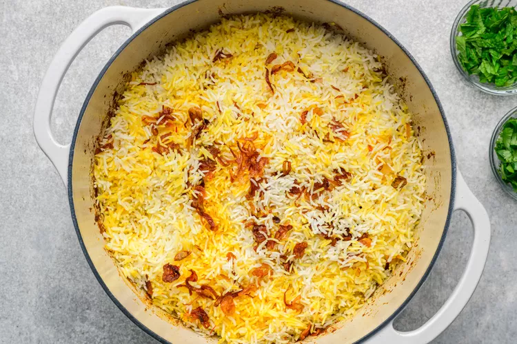

Biryani

A few characteristics tie most biryanis together. First, spices are always used to marinate or cook the protein. Second, in biryani rice is paired with a protein or vegetables, either goat, lamb, chicken, seafood, paneer, potatoes, or even chickpeas and tempeh. Finally, a biryani is always cooked in multiple layers and finished in a closed vessel in its own steam. This is also known as “dum” cooking.
Ingrediants
- 4 boneless skinless chicken thighs (1 1/4 to 1 1/2 pounds), cut into 1-inch cubes
- 3/4 cup plain yogurt
- 2 tablespoons ginger-garlic paste, or 1 tablespoon minced fresh ginger plus 1 tablespoon minced garlic
- 2 tablespoons fresh lemon juice (from 1 lemon)
- 1 1/2 tablespoons biryani masala, preferably salt-free
- 1 tablespoon ground coriander
- 1 tablespoon ground cumin
- 1/2 to 1 teaspoon red chilli powder, depending on your spice tolerance
- 1 green chilli, such as serrano, minced
- 1 (2-inch) cinnamon stick
- 1 tablespoon garam masala
Directions
- Gather the ingredients.
- Mix the chicken with the yogurt, ginger-garlic paste, lemon juice, biryani masala, coriander, cumin, red chilli powder, green chilli, turmeric, and 1/2 teaspoon of the salt (only add salt if your biryani masala is salt-free) in a large bowl. Coat the chicken in the ingredients well and allow the meat to marinate, covered and refrigerated, for at least 2 hours or overnight.
- Preheat the oven to 325 F. Combine the saffron and milk in a small bowl and let steep while you prepare the biryani.
- Place the rice in a medium bowl and add cool water to cover. Let soak while you cook the biryani.
- In a deep, heavy-bottomed cooking vessel such as a Dutch oven, heat the ghee over medium until shimmering and add the cumin seeds, bay leaves, peppercorns, and cinnamon stick. Cook, stirring constantly, until the spices become fragrant and darken slightly, about 1 minute.
- Add 1/4 cup of the fried onions and the tomato and cook this mixture for 3 to 4 minutes or until the tomato turns jammy.
- Add the chicken along with the marinade and cook, stirring occasionally, until the chicken loses its raw color and is almost cooked through, 12 to 15 minutes. Add the garam masala and stir well.
- While the chicken is cooking, heat 5 cups of water and the remaining 1 teaspoon salt in a medium saucepan and allow it to reach a rolling boil. Drain the soaked rice in a fine mesh sieve.
- Add the drained rice to the boiling water and cook for 5 to 6 minutes on medium heat, until al dente. Do not fully cook the rice. Drain the rice in a colander or strainer and keep aside.
- Once the chicken is almost cooked, top it with the par-boiled rice rice, making sure to cover the meat fully. At this point, the rice and chicken both are semi-cooked and only have a few minutes further to go.
- Top the rice with the remaining 1/4 cup fried onions and drizzle the biryani with the saffron-milk mixture.
- Cover the cooking vessel, transfer it to the preheated oven, and allow it to cook for about 10 minutes or until the rice is tender. Garnish with the cilantro and mint leaves.